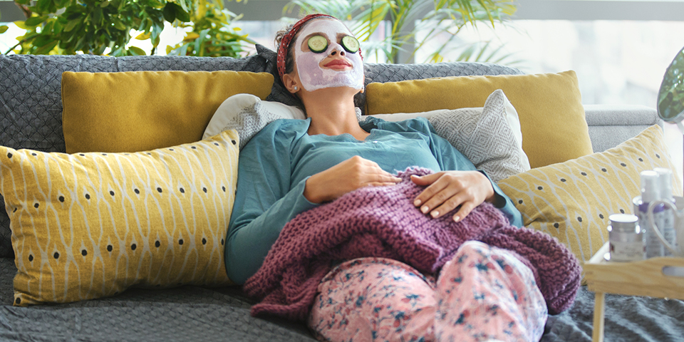

Taking Time for a Mental Health Check
Self-care is incredibly important for moms because it allows you to recharge and replenish your energy, both physically and mentally. As a mom, you often put your children's needs before your own, but taking care of yourself is vital for your overall well-being. When you prioritize self-care, you're better equipped to handle the daily challenges of motherhood, with patience, resilience, and a positive mindset.
Self-care also helps prevent burnout and reduces stress levels. Being a mom can be demanding and overwhelming at times, so it is crucial to carve out moments for yourself to relax and unwind. Whether it’s taking a bubble bath, reading, a book, practicing mindfulness, or engaging in a hobby, or self-care activities, provide an opportunity to distress, rejuvenate, and find a sense of balance in your life.
Practicing self-care since a positive example for your children. When they see you taking care of yourself, they learn the importance of self-love and self-worth. It teaches them that it's OK to prioritize their well-being, and encourages them to develop healthy habits as they grow. So remember, taking care of yourself isn't selfish it's an essential part of being a happy and fulfilled mom.
